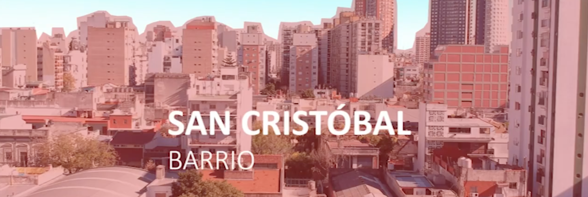

El Teatro Mandril se encuentra ubicado en el barrio porteño de San Cristóbal.
San Cristóbal es uno de los cuarenta y ocho barrios de la Ciudad Autónoma de Buenos Aires, capital de la República Argentina.
El barrio de San Cristóbal está delimitado por las avenidas Independencia, Entre Ríos, Juan de Garay y la calle Sánchez de Loria. Limita con los barrios de Balvanera al norte, Constitución al este, Parque Patricios al sur, y Boedo al oeste.
Las líneas de subte E y H lo atraviesan. Se encuentra en la zona este de la ciudad, muy próxima al casco antiguo y parte del actual barrio está dentro de la zona demarcada por el fundador Juan de Garay como límites de la ciudad.
El barrio recibe su estatus en 1869, fruto de la nueva división parroquial de Buenos Aires, junto con San Telmo, Santa Lucía, Del Pilar, San Miguel, Balvanera y Catedral al Sur. Un censo cercano arroja una cifra aproximada a 3.171 habitantes repartidos en unas 392 casas. Para el año 1887, solo 18 años después, el barrio tenía más de 37.000 habitantes y unas 3.200 casas. Un tercio de los habitantes eran extranjeros.2 Se erigió como barrio recién en 1884, cuando fue construido su templo.
En 1885, en la esquina de las avenidas Independencia y Entre Ríos, se crea el Mercado San Cristóbal, que sigue vigente en la actualidad y es el más antiguo de la ciudad.
El 7 de enero de 1919, los trabajadores en huelga de los talleres metalúrgicos Vasena son baleados en masa por la policía y mueren cuatro de ellos. Los Talleres estaban en la calle La Rioja y Cochabamba (donde actualmente se encuentra la Plaza Martín Fierro). Conocido como la Semana Trágica o el "Enero Rojo" (en alusión tanto a la sangre como a los huelguistas anarquistas y marxistas), este episodio es registrado como uno de los inaugurales de las luchas obreras en la Argentina.
En 1972 se fijan los límites definitivos del barrio. Con la construcción de la Autopista 25 de Mayo en 1980 muchos edificios de la ciudad fueron demolidos y la fisonomía del barrio se modificó.
